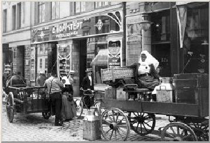
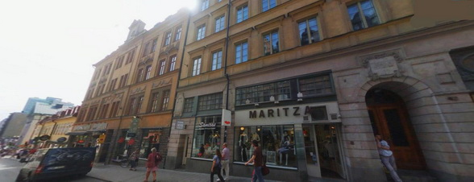
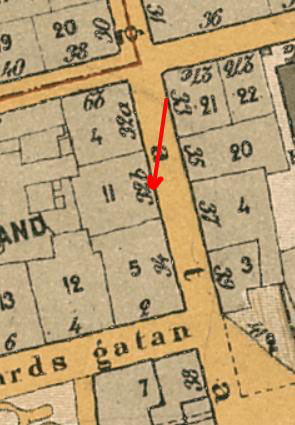

Södermalm i tid och rum

7 .

Samma plats 2018. Längst till vänster syns Lillienhoffska Palatset
{kind=link}

{kind=link}
Läge: Bangårdsgatan 6-12, Götgatan 42-48, Högbergsgatan 37-47, Medborgarplatsen.
Kvartersnamnet Nederland finns första gången nämnt vid Götgatan 1650, troligen beroende på holländskt inflytande - i närheten bygg-e den från Holland inflyttade Louis de Geer sitt palats i Götgatsbacken som närmare framgår under kv. Schönborg. Pä Tillaei karta är kvarter nr I mellan Götgatan och sjön Fatburen betecknat Nederland och är där redovisat under "S:t Catharinae församling" medan kv. Nederland Mindre väster därom finns nämnt under "S:t Mariae församling". Nu ligger båda dessa kvarter inom Maria Magdalena, men områdena är i stort sett desamma som 1733.
|
Det dominerande huset inom kv. Nederland är det Lillienhoffska palatset vid Götgatan 46, som byggdes i holländsk stil 1668-70 under ledning av J.T. Albinus för den från Tyskland
härstammande Joachim Pötter, senare adlad Lillienhoff. Denne var delägare i Tjärkompaniet, Ostindiska kompaniet och Falu gruva och spelade en stor roll vid den svenska
riksbankens tillkomst. Huset såldes senare till en engelsk minister och den delen av kvarteret fick då namnet Engelska huset, ett kvartersnamn som hösten 1978 alltjämt fanns kvar på gatuskyltarna men som är dömt att försvinna. Inom kvarteret har senare funnits ett kattuntryckeri, Katarina församlings första fattighus och under senare år restaurang Fatburen samt Pressarkivet och Pressmuseum, innan dessa institutioner flyttades till Riksarkivet i Marieberg. - I det väster om kvarteret liggande kv. Nederland Mindre hade skulptören Christian Eriksson sin bostad och ateljé i ett moderniserat 1700-talshus vid Maria Prästgårdsgata från 1907 till sin död. (Ur Hasselblad, Stockholmskvarter) |